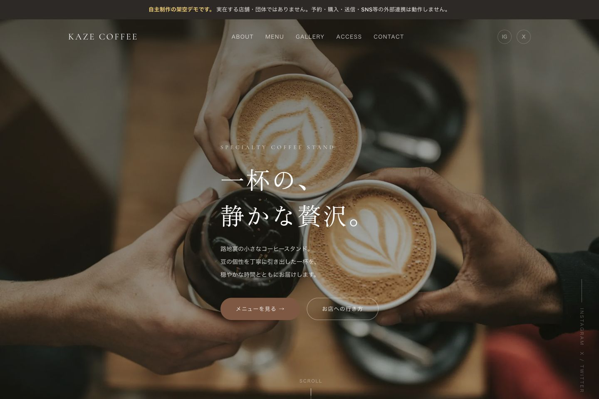
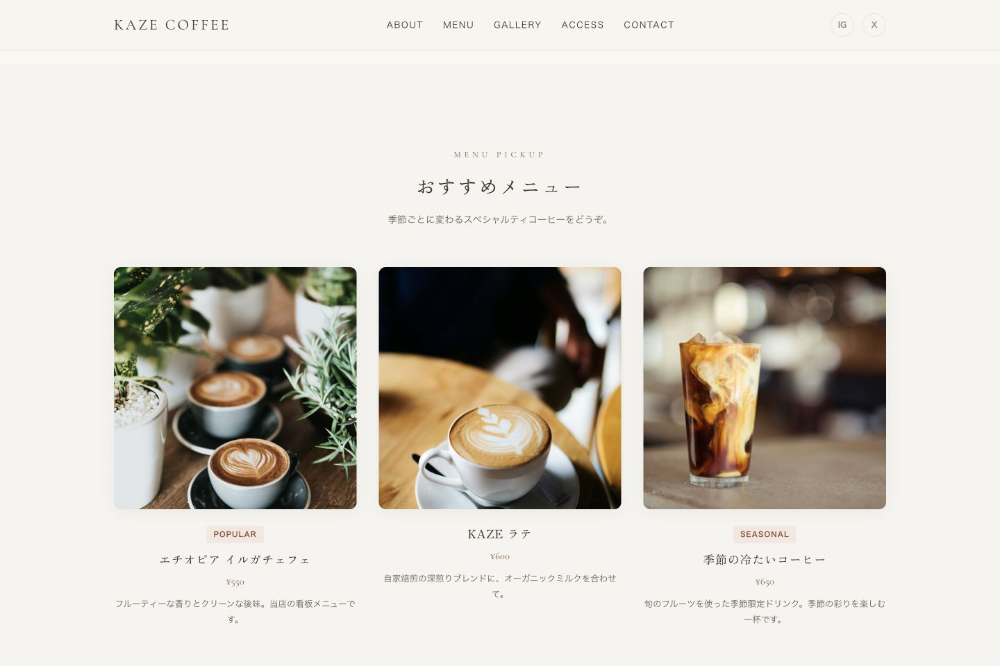

カフェのブランドサイト
KAZE COFFEE
お店の雰囲気と来店情報を伝えるカフェサイト
カフェの空気を伝える大きな写真と、価格・味わいを比較できるメニューを制作。ファーストビューからメニューとアクセスへ直接進める、1ページのブランドサイトです。
自主制作・架空案件 ／ デザイン・HTML・CSS・JavaScript

ターゲット・ペルソナ
設計上の想定
- ターゲット
- 近隣でカフェを探している人
- ペルソナ
- 落ち着いて過ごせる店を探し、メニューと営業時間を確認してから訪れたい人。

メニューの画面
写真で選べるメニュー
おすすめメニューには写真、商品名、価格、味わいの説明をまとめました。写真の印象だけでなく、価格と特徴からも選べます。
本文は短く、写真の周囲に余白を残しています。ファーストビューの静かな印象を保ちながら、選ぶための情報を足しました。
メニューの実画面を見る制作の背景
来店情報を1ページに
どんなコーヒーがあるのか、どのような時間を過ごせるのか、いつ行けるのか。初めて訪れる人が確かめたい情報を、1ページで読めるようにしました。
ファーストビューには「メニューを見る」と「お店への行き方」を配置。写真から興味を持った人が、ページ全体を探さずに目的の情報へ移れます。
写真と情報のバランス
大きな写真と明朝体の見出しでお店の第一印象をつくり、メニューと店舗情報は横組みで整理しました。営業時間やアクセスを確認する場面では、文章を探し回らずに読める配置を意識しています。
小さい画面では全画面メニューに切り替え、開いている間は背景のスクロールを止めます。表示アニメーションにはIntersectionObserverを使用しています。
制作範囲
制作概要
- 担当
- デザイン・情報整理・フロントエンド実装
- 構成
- 1ページのブランドサイト
- 技術
- HTML / CSS / JavaScript
- デモ
- メニュー・店舗情報・ページ内移動を確認できます。予約・送信・SNS連携は実装していません。
自主制作の架空サイトです。実店舗の集客実績はありません。
実際の画面と操作は、制作デモで確認できます。